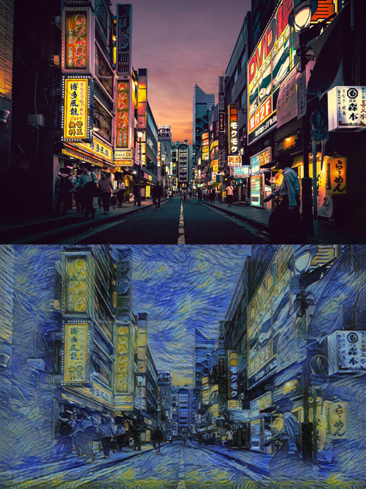

Testing Intel’s Arc A770 GPU for Deep Learning Pt. 3
- Introduction
- Training Style Transfer Models
- Generating Images with 🤗 Diffusers
- No Luck Fine-tuning LLMs
- Closing Thoughts
Tutorial Links
- Getting Started with Intel’s PyTorch Extension for Arc GPUs on Ubuntu: This tutorial provides a step-by-step guide to setting up Intel’s PyTorch extension on Ubuntu to train models with Arc GPUs
- Getting Started with Intel’s PyTorch Extension for Arc GPUs on Windows: This tutorial provides a step-by-step guide to setting up Intel’s PyTorch extension on Windows to train models with Arc GPUs.
Introduction
In Part 2 of this series, I successfully fine-tuned an image classification model with Intel’s PyTorch extension on the Arc A770 GPU. Total training time was within 10% of the Titan RTX using mixed precision.
I started with an image classification task to give the A770 and Intel’s extension the best chance of success. Image classification is a common task in deep learning, and the ResNet family of models is a popular choice for such tasks.
Once I knew that this baseline scenario worked, I wanted to try something slightly more complex. I decided to start with one of my style transfer training notebooks. I also tested running Stable Diffusion 2.1 using the 🤗 Diffusers library.
The results in this post are with version 1.13.120+xpu of Intel’s PyTorch extension.
Training Style Transfer Models
My style transfer training notebook uses a custom style transfer model and a custom class for perceptual style loss to extract features from a pre-trained computer vision model. There is nothing exotic about the training code, but it is slightly non-standard compared to the image classification task. You can find the original training notebook on GitHub at the link below:
Once I swapped the cuda backend references for Intel’s xpu backend, the notebook mostly worked as intended. I only needed to make one change to the style transfer model. The current version (1.13.120+xpu) of Intel’s extension does not fully implement the ReflectionPad2D layer in bloat16 precision.
RuntimeError: "reflection_pad2d_out_template" not implemented for 'BFloat16'It does for float32 precision, but training without mixed precision takes much longer. Fortunately, the ZeroPad2D layer works just fine in mixed precision. The ReplicationPad2D layer also works but is slower.
Here is a sample output from a model trained on the A770 using Van Gogh’s Starry Night painting as the style image:

The output images are similar in quality to those generated with the original notebook on the Titan RTX. However, using a ZeroPad2D layer might require slightly more training as the borders are noticeable on some of the images. Below is a comparison of the total training time for the Arc A770 and the Titan RTX:
| Device | Training Time |
|---|---|
| Arc A770 | 1 hour 55 minutes |
| Titan RTX | 1 hour 37 minutes |
There is a more significant percentage gap in total training time than with the image classification notebook at approximately 18.6%. I’ll need to conduct further testing to see if that difference is due to calculating the perceptual loss or some other part of the training process.
Generating Images with 🤗 Diffusers
Next, I modified one of my text-to-image notebooks to try running Stable Diffusion 2.1 with Intel’s PyTorch extension.
I only encountered one issue with the original notebook code. I use PyTorch’s Generator class to save and load the state of the random number generation algorithms when generating images in the original notebook. The Generator class does not appear to support xpu devices in the current version of Intel’s extension, so I had to remove those sections from the notebook. Other than that, everything worked without issue.
Prompt: “monet oil painting, a puppy”
I compared the performance of the A770 and Titan RTX by generating 512x512 images at float16 precision. Since the xformers library does not support Arc GPUs, I did not enable it when benchmarking the inference speed on the Titan RTX for this comparison. Although, I did use PyTorch 2.0 for the Titan RTX runs.
| Device | Model Compilation | Iterations/second |
|---|---|---|
| Arc A770 | N/A | 5.97it/s |
| Titan RTX | None | 15.76it/s |
| Titan RTX | default |
18.88it/s |
| Titan RTX | reduce-overhead |
19.37it/s |
| Titan RTX | max-autotune |
19.68it/s |
Even without model compilation, the Titan RTX is over twice as fast as the A770. With model compilation, it’s over 3x faster. Still, the A770’s performance is far from unusable. I’ll rerun the comparison once Intel’s extension supports PyTorch >=2.0.
No Luck Fine-tuning LLMs
I’ve been excited about the recent developments for fine-tuning LLMs on local machines, and I think the relatively affordable A770 16GB card has a lot of potential for that use case. Unfortunately, projects like Alpaca-LoRA and QLoRA have dependencies, such as the bitsandbytes package, that require CUDA devices. The bitsandbytes package provides the quantization capability that lowers the memory requirements to run LLMs. It provides this functionality using custom CUDA functions. I don’t know of any plans to add support for Intel GPUs to the bitsandbytes package, so perhaps Intel will provide an alternative.
Closing Thoughts
At the end of Part 2, I stated that I believe Arc GPUs are now credible options for deep learning. My experience testing the A770 on some more complicated use cases mostly reaffirms that. Running the style transfer and Diffusers notebooks with Intel’s PyTorch extension only took a couple of changes.
However, Nvidia GPUs have been dominant for a long time and will likely continue to get priority for cutting-edge developments like the quantization methods used in QLoRA. Anyone considering an Arc GPU for deep learning should keep that in mind and verify the dependencies needed for their target use case support Arc GPUs.